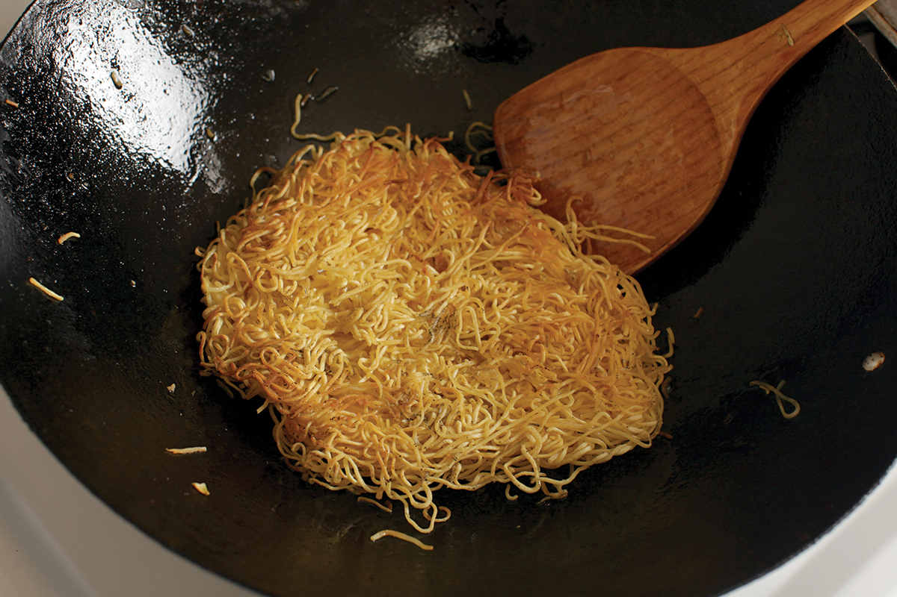
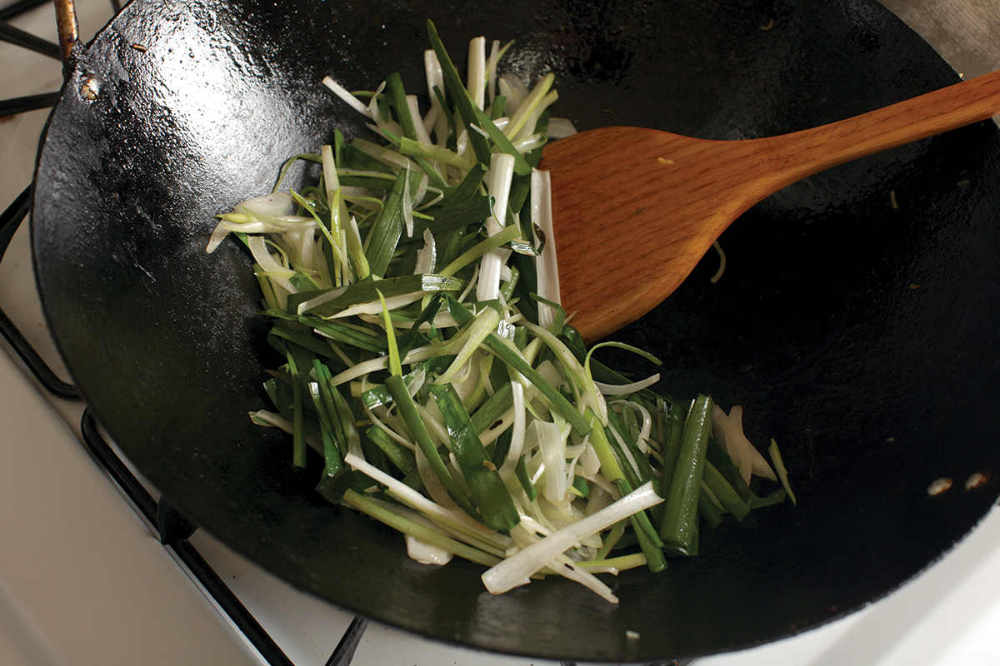
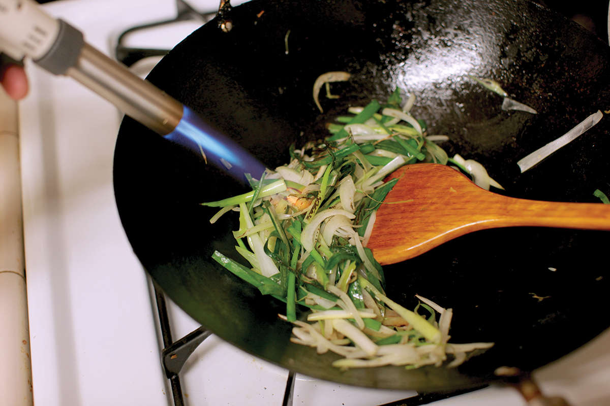
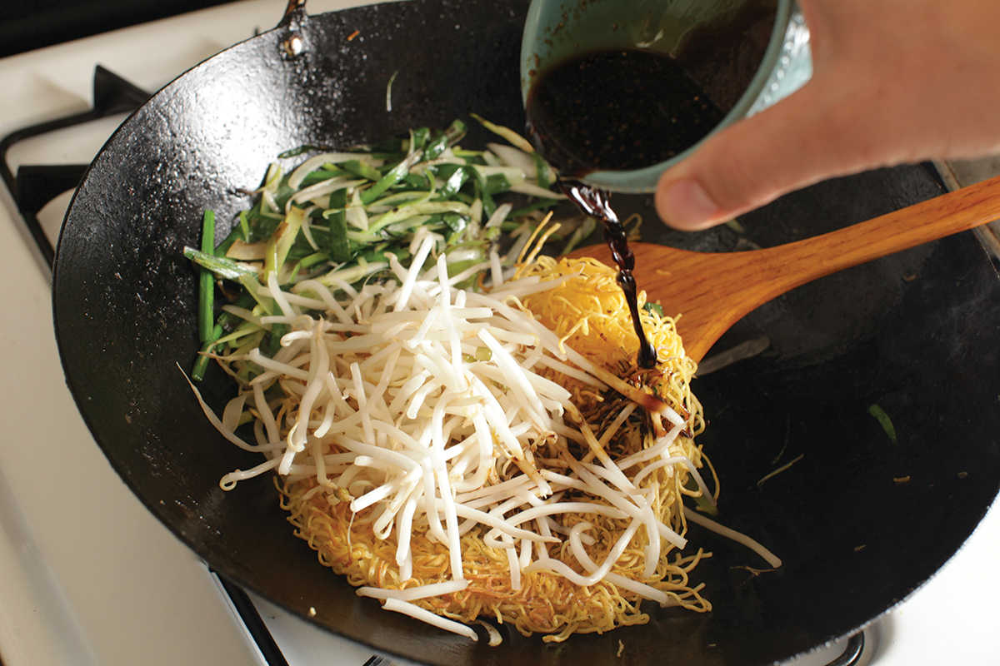

CANTONESE SUPERIOR SOY SAUCE NOODLES (WITH BEAN SPROUTS AND SCALLIONS)
|
Yield Serves 2 |
Active Time 15 minutes Total Time 30 minutes |
Hong Kong–style panfried noodles may also be labeled “chow mein” or “for chow mein.” They are thin egg noodles that typically come precooked (the package will say “ready to fry” or something similar). Raw noodles will have a floury appearance and should be boiled according to package directions, typically 45 to 60 seconds. Dry noodles can also be used. Follow the package directions for cooking times.
INGREDIENTS
For the Sauce:
1 tablespoon (15 ml) light soy sauce
2 teaspoons (10 ml) dark soy sauce
½ teaspoon (1 g) freshly ground white pepper
1 teaspoon (5 ml) Shaoxing wine
1 teaspoon (5 ml) roasted sesame oil
½ teaspoon (2 g) sugar
For the Noodles:
Kosher salt
8 ounces (225 g) Hong Kong–style panfried noodles (fresh chow mein; see Note)
For the Stir-Fry:
3 tablespoons (45 ml) vegetable oil
2 ounces thinly sliced yellow onion (about ½ cup/¼ large)
4 scallions, cut into 2-inch segments and thinly sliced lengthwise
Small bunch Chinese chives or baby leeks, cut into 2-inch sections (optional)
3 ounces (about 1 cup) mung bean sprouts, stringy ends torn off
Kosher salt and freshly ground white pepper
A Hong Kong dim sum classic, these Cantonese soy sauce noodles are prized for their simplicity and combination of textures. With nothing more than noodles, onions, and bean sprouts and a simple soy-based sauce, a lot of the essence of this dish comes down to technique.
The thing that sets these noodles apart is their cooking method. As a derivative of Suzhou-style liang miàn huang (Crispy Chow Mein Noodle Cake, here), they begin in the same manner: boiling the noodles, then panfrying them until crisp (though not quite as crisp as for liang miàn huang). Because this noodle cake ends up stir-fried in the end, you also don’t have to worry about flipping the noodles all in one go, so no need to use the two-plate inversion method here; just flip it over in pieces.
This is one of those dishes where smoky wok hei can really make a big improvement in flavor. To do it, I either stir-fry on my outdoor wok burner, letting the flames leap into the wok as I stir-fry the noodles and vegetables, or use the “torch hei” method outlined on here. Equally essential for wok hei flavor is searing the sauce by drizzling around the edge of the wok so that it falls straight onto a searing-hot surface, which alters its flavor.
DIRECTIONS
1 For the Sauce: Combine the soy sauces, white pepper, wine, sesame oil, and sugar in a small bowl and stir until the sugar is dissolved. Set aside.
2 Bring 1 quart (1 l) of lightly salted water to a boil over high heat in your wok. Add the noodles (the wok may lose its boil; that’s OK) and stir them a few times with chopsticks to break them up, then immediately drain through a colander or fine-mesh strainer. (If using raw or dried noodles, follow the package directions for cooking time—typically 45 seconds for raw and a couple minutes for dried). Spread the noodles on a rimmed baking sheet so that they can steam as they cool. Allow to cool until the noodles feel dry to the touch, about 10 minutes.
3 BEFORE YOU STIR-FRY, GET YOUR BOWLS READY:
- a. Noodles
- b. Onion, scallion, chives, or leeks (if using)
- c. Mung bean sprouts
- d. Sauce
- e. Empty baking sheets for cooked ingredients
- f. Serving platter





4 For the Stir-Fry: Heat a wok over medium-high heat until very lightly smoking. Add 2 tablespoons (30 ml) of the oil, swirl to coat wok, then carefully add the noodles, using your spatula to gently spread them into a single layer. They may stick a little bit at this point. That’s OK. Don’t try to move or stir them if they are stuck. Cook the noodles without disturbing them for 1 minute, moving the wok around a bit so that the base heats evenly over the burner.
5 Holding your spatula upside down, gently prise off the crispy edges of the noodles from the base of the wok, working around and under the noodles until they are completely released from the wok. Carefully flip the noodles. If you practice, you should be able to flip them in a single motion using just the wok, like a pancake. Alternatively, use your spatula to flip it over in sections. It’s OK if it breaks up a bit.
6 Cook the second side like the first, then use your spatula to release the noodle cake again. Slide the noodles out into a rimmed baking sheet and spread them into an even layer.
7 Wipe out the wok and return it to high heat until lightly smoking. Add the remaining 1 tablespoon (15 ml) of oil and swirl to coat. Add the onion, scallion, and Chinese chives or baby leeks (if using). Stir-fry until the vegetables are lightly charred and wilted, about 1 minute, then transfer them to a second rimmed baking sheet.
8 For Smoky Wok Hei (optional): Ignite your blowtorch and, holding the flame 2 to 3 inches above each tray, sweep across the vegetables and noodles until a smoky aroma reaches your nose, about 15 seconds per tray. (You should hear a distinct crackle and see small bursts of orange flame as the oil on the vegetables and noodles jumps and combusts.) Toss the noodles and the vegetables gently with a pair of tongs and torch again.
9 Reheat the wok over high heat until smoking. Return the vegetables and noodles to the wok. Add the mung bean sprouts. Stir the sauce and add it to the wok, swirling it around the edges so that it sears. Stir-fry rapidly, using the back of your spatula to break the noodles up and flip them through the sauce and distribute the vegetables evenly. Cook until there is no liquid sauce left at the bottom of the wok and the noodles are charred and crispy in spots.
10 Season with salt and white pepper to taste. Transfer to a serving platter and serve.